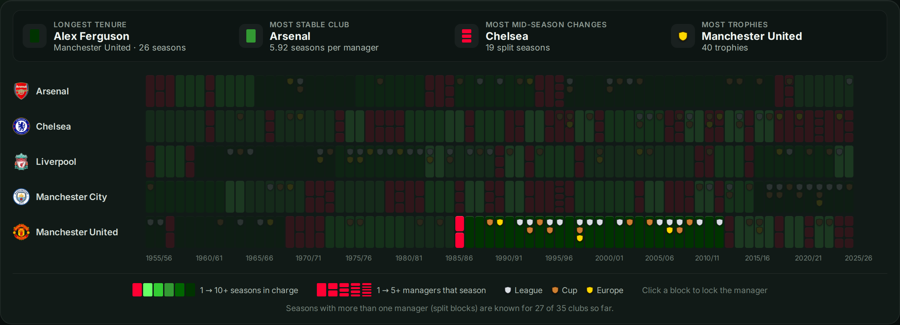
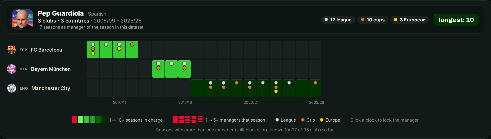
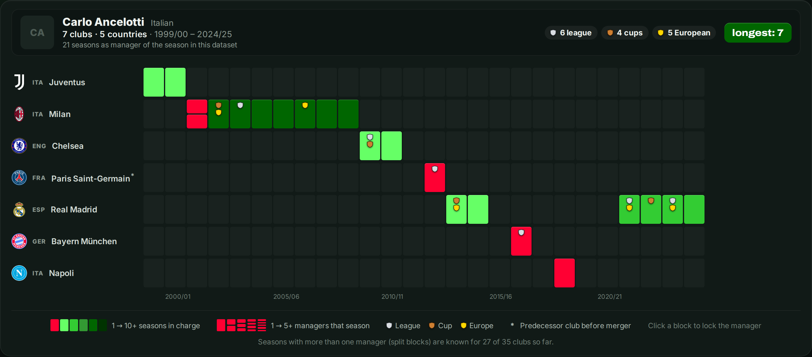
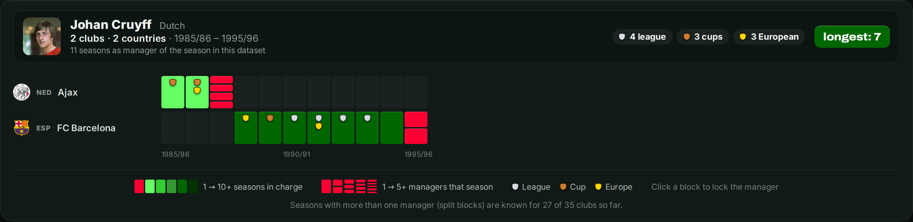
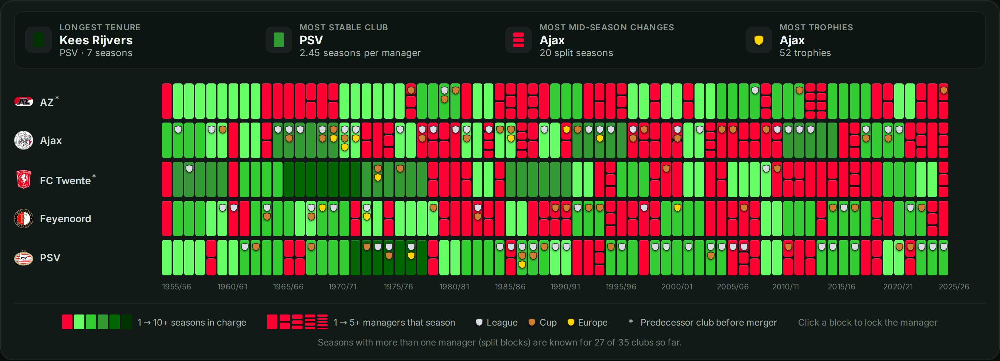

Who is the greatest manager of all time? The one with the most trophies, the one who changed how the game is played, or the one who won everywhere he went? Every fan has an answer. Here is what 71 seasons at 35 of Europe's biggest clubs add to the argument.
A dataset cannot settle this debate, and it will not try. What it can do is test the claims: how much did each manager win, how quickly, and where. Three kinds of greatness come out of it.
The kings of longevity
For volume over time, the benchmark is Sir Alex Ferguson: 25 trophies in 27 seasons at Manchester United, or 0.93 a season for more than a quarter of a century. What makes the number remarkable is not the peak but the absence of a decline. He built at least three title-winning teams at the same club.

Two others belong in this category. Miguel Muñoz managed Real Madrid for 14 seasons from 1960 and won 13 trophies, among them the European Cup of 1966. Arsène Wenger spent 22 years at Arsenal. His total is lower (12 trophies across Monaco and Arsenal, 0.41 a season), but he changed how an English club was run, from diet to scouting, and saw it through a move to a new stadium.
Data Focus: The Trophy Kings
Managers with the most trophies in this dataset, with trophies per season as manager of the season.
- 1=. Pep Guardiola - 25 trophies (1.47 per season)
- 1=. Sir Alex Ferguson - 25 trophies (0.93 per season)
- 3. José Mourinho - 20 trophies (1.11 per season)
- 4. Giovanni Trapattoni - 17 trophies (0.71 per season)
- 5. Udo Lattek - 16 trophies (0.94 per season)
- 6. Carlo Ancelotti - 15 trophies (0.71 per season)
- 7=. Luis Enrique - 13 trophies (1.86 per season)
- 7=. Miguel Muñoz - 13 trophies (0.93 per season)
- 7=. Louis van Gaal - 13 trophies (0.72 per season)
- 10=. Ottmar Hitzfeld - 12 trophies (0.92 per season)
- 10=. Arsène Wenger - 12 trophies (0.41 per season)
The modern super-coaches
The old guard built their totals over decades. The modern elite does it faster. Pep Guardiola has matched Ferguson's total in ten fewer seasons: 25 trophies in 17 seasons at Barcelona, Bayern Munich and Manchester City, 1.47 a season. He won league titles in three countries and the treble twice, in 2009 and 2023, and his teams changed how the game is played. Of all the candidates, he combines volume, speed and influence best.

Guardiola is not the fastest winner in the list, though. Luis Enrique has 13 trophies in seven seasons as manager of the season, 1.86 a season, including trebles with Barcelona in 2015 and with Paris Saint-Germain in 2025. It is a shorter career, but among managers with at least five seasons in the dataset nobody wins more often.
José Mourinho has the third-highest total, 20 trophies at 1.11 a season, from the Champions League with Porto to the treble with Inter. Carlo Ancelotti's total is lower (15 trophies, 0.71 a season), but his record is unique in another way: five Champions League titles as a manager, more than anyone, and league titles in Italy, England, France, Germany and Spain. Louis van Gaal (Netherlands, Spain, Germany) and Giovanni Trapattoni (Italy, Germany, Portugal) also won the league in three countries.

The revolutionaries
Some greatness escapes the count. Zinedine Zidane won three Champions Leagues in a row with Real Madrid, a feat unlikely to be repeated. This dataset credits him with only two of them, because he took over halfway through 2015/16 and that season goes to Rafael Benítez, who was in charge longer. It is a useful reminder of what a count can and cannot capture.
Johan Cruyff's total is modest by comparison: 10 trophies in 11 seasons at Ajax and Barcelona. His influence is not. He gave Barcelona a way of playing that his pupils Guardiola and Frank Rijkaard took further, and that still shapes the game. Udo Lattek and Ottmar Hitzfeld belong here too, in a German way: they did not just win, they set the standard of dominance at Bayern Munich and Borussia Dortmund for a generation.

So who is the greatest?
The honest answer depends on the question. For sustained dominance at one club, Ferguson has no equal. For speed and breadth of winning, Guardiola has set a new standard, and Luis Enrique is closing in. For winning anywhere, Ancelotti. For influence beyond trophies, Cruyff. What the data does show is a shift: the best managers of this century win more per season than the best of the last one did, but they rarely stay long enough to build what Ferguson built.
The Mount Rushmore of Modern Management
Four faces, four kinds of greatness:
Sir Alex Ferguson
The Architect
For 27 seasons at one club and at least three title-winning teams built in that time.
Pep Guardiola
The Revolutionary
For matching Ferguson's trophy total in ten fewer seasons, with teams that changed the game.
Carlo Ancelotti
The Globetrotter
For five Champions Leagues and league titles in all five of Europe's biggest leagues.
Johan Cruyff
The Godfather
For an idea of football that outlived his own trophies and shaped the coaches who came after him.
How trophies are counted: league titles, national cups and major European trophies, with at most one of each per season, credited to the manager of the season (the one in charge longest, never an interim). Data up to and including 2025/26.
Explore the Data Yourself

Compare clubs, follow a manager from club to club, or highlight one name across a whole league.
Launch the Interactive Visualization